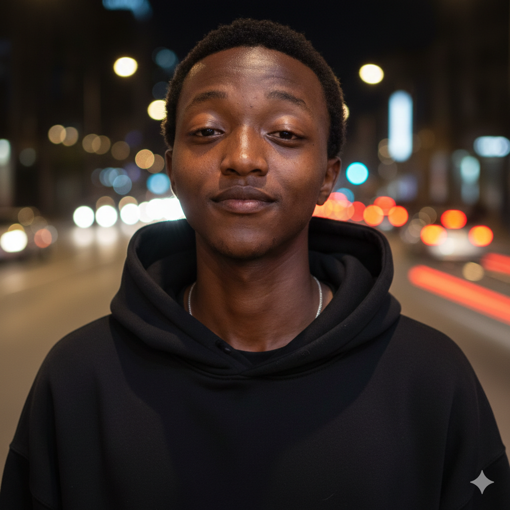

Registration Number: IN16/00015/24
📄 Download CV
My name is Erick Mwangi, and I am a passionate software engineering student pursuing a Bachelor of Science in Software Engineering at Kisii University. With a strong foundation in programming and a keen interest in emerging technologies, I am dedicated to developing elegant solutions that solve real-world problems.
I have a deep passion for programming, artificial intelligence, web development, and building innovative tech solutions. I believe in continuous learning and staying updated with the latest trends in technology. My interests span across full-stack development, machine learning, and creating user-friendly applications that make a difference.
Beyond coding, I enjoy exploring creative design approaches and understanding how technology can improve people's lives. I thrive on collaboration and am always eager to learn from experienced professionals and contribute to team projects. I actively engage in technical blogs, participate in learning communities, and work on projects that challenge my problem-solving skills.
After completing my degree, my goal is to become a professional software engineer who builds impactful and scalable software systems. I am committed to leveraging my technical skills and creative thinking to contribute meaningfully to the tech industry and make a positive impact on society.